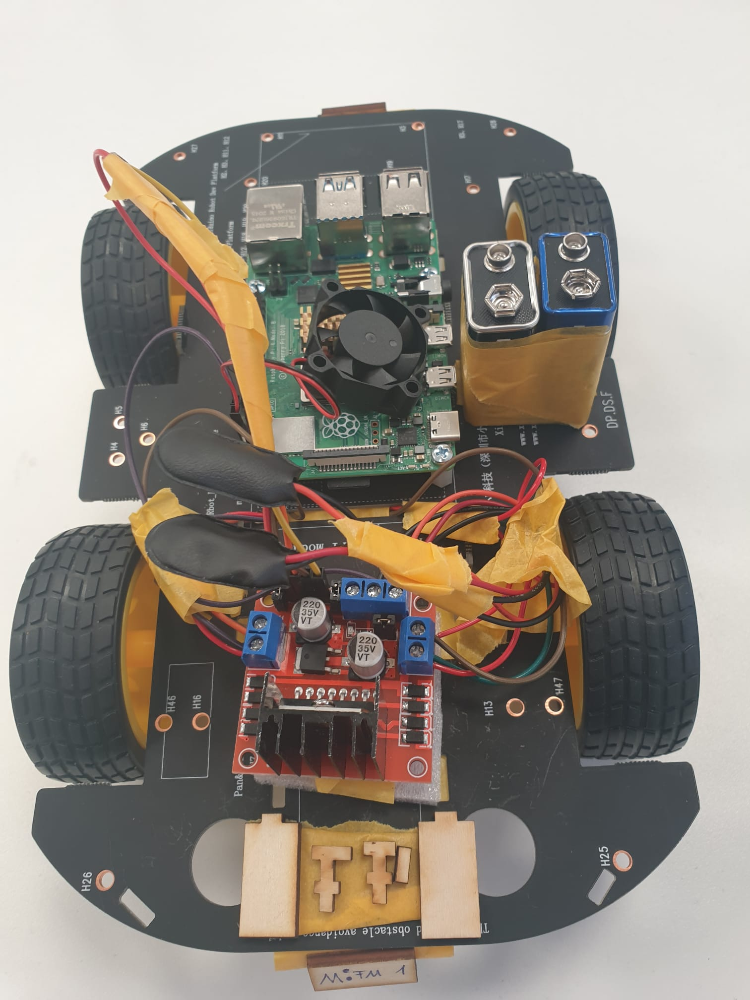
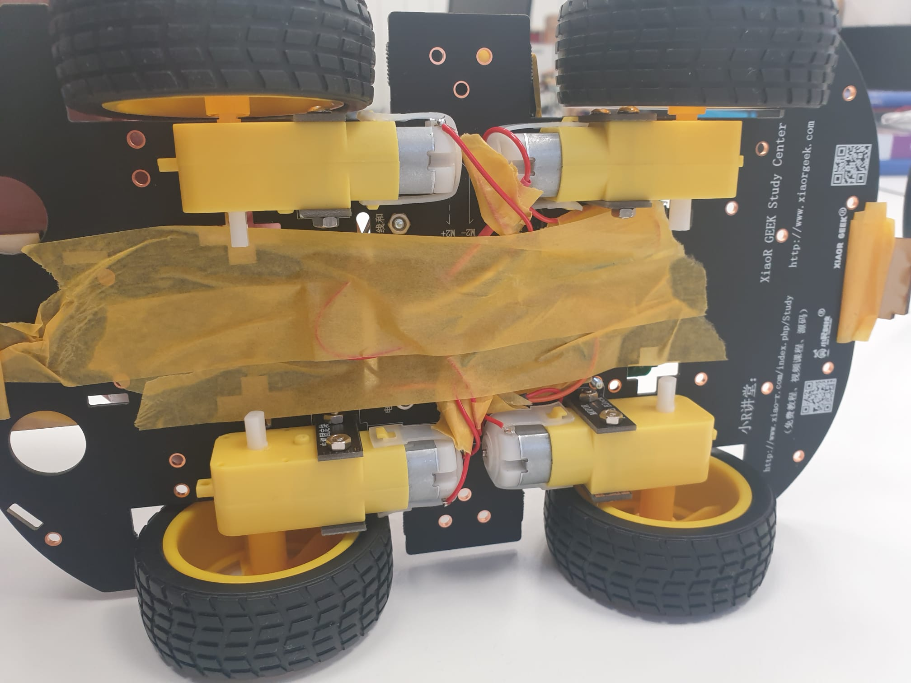

Der Raspberry Pi ist ein Einplatinencomputer, der von der britischen Raspberry Pi Foundation entwickelt wurde.
Der Rechner enthält ein Ein-Chip-System (SoC) von Broadcom mit einer Arm-CPU.
Die Platine hat das Format einer Kreditkarte.
Hier kommt später viel text hin
Hier kommt später viel text hin
Hier kommt später viel text hin
zurück zur Startseite